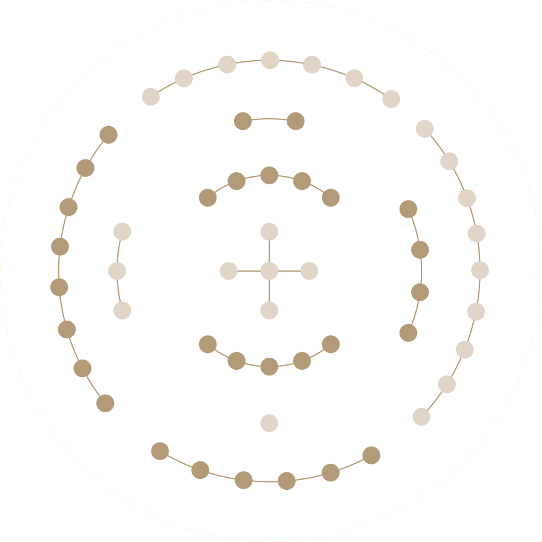

01 / CORE
干
支
支
BaZi · Four Pillars
A birth-time structure expressed through the Heavenly Stems, Earthly Branches, Ten Gods and Five Elements.
ANCIENT SYSTEMS · PERSONAL CHARTS · CULTURAL INSIGHT
Explore the structure of your birth chart through Chinese metaphysical traditions — with clear calculations, thoughtful interpretation and room to understand the sources.

FIVE LENSES · ONE PERSONAL CHART
Start with the systems that shape the chart. Explore each one independently, then see where their readings agree, differ or remain unresolved.
A birth-time structure expressed through the Heavenly Stems, Earthly Branches, Ten Gods and Five Elements.
A twelve-palace chart of stars, transformations and their relationships across life domains.
Pre-Heaven, Later-Heaven and annual hexagram structures, explored through their lines and relationships.
A classical lens using year-mandate, Na Yin and related traditional structures.
Included in the annual synthesisA supporting interpretive lens used to compare signals and examine timing, not as a standalone dashboard.
Supporting analysis in the reportONE YEAR · ONE CONSIDERED REPORT
Your annual report brings the traditions into conversation around five grounded life dimensions. It expands only where the verified chart contains a meaningful signal.
PERSONAL CULTURAL ANALYSIS
A CLEARER WAY TO EXPLORE
LIORIN presents traditional systems as cultural frameworks with traceable calculations and clearly stated limits — not as scientific certainty or a substitute for professional advice.
START WITH THE SOURCE DATA
Accurate birth details help establish the calendar, time zone and chart structure used by each tradition.
A free chart does not require an account or email. Your details are not saved to a profile unless you explicitly choose to remember them on this device.
BAZI · FOUR PILLARS
The Four Pillars describe a traditional time structure through stems, branches and element relationships.
In production, this panel will show the calculation version, calendar conversion, time-zone handling, source references and rule IDs returned by the engine. No inference is made in the browser.
The year pillar is traditionally associated with early environment, lineage and broader social context. This is placeholder explanatory content.
河圖 · HETU
The original map artwork remains unchanged. Motion is applied only to its outer image element.
The Creative · illustrative only
LINE EXPLORATION
Select a line to view its place within the hexagram. In production, line state, changing-line status and source references are returned by the Heluo engine.
A FOCUSED VIEW OF ONE YEAR
A structured annual cultural analysis across five life dimensions, informed by distinct traditional systems and the evidence they support.
Professional roles, development patterns, responsibilities and supported periods of change.
Traditional symbols relating to resources, expenditure, stability and management.
Relationship and family themes only where the relevant chart structures are active.
Cultural symbolism around balance and habits; never a diagnosis or medical forecast.
Social context, collaboration, networks and environmental themes.
The report does not force equal-length sections. Stronger, evidence-supported themes receive more attention; where no distinct timing signal is supported, the report says so.
EMAIL DELIVERY
Your report is prepared after payment and validation. We will email a secure access link when it is ready.
DEMO ORDER REVIEW
A prototype order summary is ready. No payment has been processed and no report has been generated.
CULTURAL FRAMEWORKS · TRACEABLE SOURCES
LIORIN separates calculation, traditional interpretation and modern-language presentation. Every production statement must be traceable to an admitted rule and its evidence.
Birth time, calendar conversion, time zone and chart structures are calculated by the engine. The browser does not recreate or override these rules.
BaZi, Blind School, Lu Ming, Zi Wei and Heluo are analysed independently before cross-reference. Agreement and disagreement remain visible.
Traditional concepts are mapped into clear contemporary language without changing the underlying rule or claiming scientific certainty.
Unsupported or unresolved statements are not presented as findings. Cultural readings are not medical, financial, legal or relationship advice.